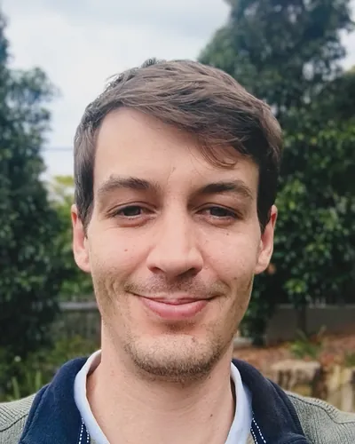

Hydrotechnical engineering for the mining and resources sector
Water clarity. Balanced decisions.

KHAPL is the engineering consultancy of Alexander Karrasch, Principal Civil Engineer (RPEQ). It provides water resources engineering for mining and resources: planning, risk assessment, hydrology, hydraulics, design, tailings, approvals, closure, modelling and GIS.
Working across Australia. KHAPL can be engaged directly, as a specialist subconsultant, or for independent third-party review.
Core capabilities
Select an icon to see the services behind it.
01Climate Analysis & Climate Change
Analysis of historical climate records, statistical screening, extreme events and future climate scenarios, including effects on water systems and infrastructure to 2100.
- Rainfall and climate record analysis
- Statistics and stochastic climate sequences
- Extreme and cyclonic event analysis
- Climate change scenarios to 2100
- Effects on water supply, spill risk, compliance and infrastructure sizing
02Hydrology
Continuous simulation and design-event hydrology, including calibrated rainfall-runoff models, arid catchments, inflow estimates, dam-break inputs and extreme events.
- Design hydrology to Australian Rainfall and Runoff (ARR)
- Continuous simulation and calibrated rainfall-runoff models (RORB, WBNM, HEC-HMS)
- PMP estimation and extreme events to 1 in 10,000 AEP
- Arid-zone catchment hydrology
- Pit inflow and flood ingress estimates
- Hydrological inputs to dam break and consequence studies
03Hydraulic Analysis
Hydraulic modelling for floods, rivers and creeks, channels, structures and breach flows.
- 1D and 2D flood modelling (TUFLOW, HEC-RAS)
- River and creek assessments
- Flood ingress and pit flood protection
- Spillway, channel and culvert capacity
- Breach and dam break flow modelling
- Complex and sub-daily hydraulics
04Landforms
Planning of waste landforms, pits and storages, from concept layouts and options studies through staging to final landform.
- Landform planning and optioneering
- Concept layouts and options studies
- Staging: starter, raises and closure
- Surfaces, storage curves and volumes
- Cut, fill and earthworks quantities
- Drainage and spillway layout
05Water & Waste Facilities
Water-related assessment of water dams, tailings storage facilities and waste facilities, including containment, consequence and failure impact.
- Dam break and failure impact assessment
- Tailings run-out, population at risk (PAR) and potential loss of life (PLL)
- Consequence category assessment (ANCOLD, CDA)
- Emergency action plan inundation mapping
- TSF water balance, decant and reclaim
- Raise and reclamation schedules
Works alongside the Engineer of Record and geotechnical specialists; KHAPL does not act as Engineer of Record.
06Site Water Management
Assessment and planning of site-wide water systems, including wet-season planning, dams, transfers, diversions, monitoring and operational risk.
- Site water management planning and modelling
- Water management plans and wet-season readiness
- Dams, transfers and diversions
- Sediment basins and erosion and sediment control plans (IECA)
- Water quality objectives and monitoring programs
- Release and discharge strategies
07Water Balance Modelling & Accounting
Purpose-built models for forecasts, storage and transfer systems, supply reliability, mine-plan scenarios, inventory reconciliation and water accounting.
- Site and process water balances in GoldSim (licence held)
- Storage, transfer and supply reliability assessment
- Life-of-mine and mine-plan scenario forecasting
- Calibration to monitoring data and sub-daily modelling
- Inventory reconciliation and water accounting
- Model audits and model dashboards
08Approvals
Water-related inputs to EA, EIS, EPBC and planning approvals, including compliance advice and regulator engagement.
- GISTM water, flood and consequence ratings; ANCOLD and CDA conformance
- Regulated and referable dams (Queensland)
- EIS surface water and flood studies
- EA and licence amendments, and SDAP approvals
- Release and discharge approvals
- Regulator responses and environmental protection orders
09Design
Design of water infrastructure on mine sites, from concept and options through to sizing and detailed design inputs.
- Spillways, drains and diversions, including natural-form diversions
- Levees and pit flood bunds
- Sediment basins and erosion and sediment controls
- Culverts, causeways and crossings
- Storage, pond and pump sizing
- Option comparison and design review
10Operation
Support for operating sites: keeping water from stopping production, and keeping compliance on track.
- Operational water management and wet-season planning
- TARP, OMS and ERP review
- Disposal tracking and forecasting
- Monitoring, reporting and water accounting
- EA and licence condition compliance audits
- Reviews after spills and extreme weather events
11Closure
Water inputs to rehabilitation and closure planning, from residual voids and pit lakes to long-term landform performance.
- Residual void and pit lake hydrology
- Closure capping and final landform drainage
- Water and closure criteria review
- Life-of-mine and pit studies
- Long-term climate and extreme event performance
- Rehabilitation water management
12Spatial & Digital
Mapping, GIS and terrain modelling, Python automation, data processing and model dashboards.
- Advanced GIS: terrain surfaces, volumes and mapping
- Python automation and scripted, repeatable workflows
- Data processing, management and governance
- Model dashboards and reporting tools
- Model and data audits
133D Models
Physical terrain, landform and infrastructure models for option comparison, design reviews, constructability discussions and technical communication.
- Printed terrain and landform models from design surfaces
- Side-by-side physical comparison of design options
- Tangible models for design reviews and constructability workshops
- Clear communication with site teams, management and stakeholders
14Client Advisory
Support to scope, procure and manage technical work, plus independent review, strategy and training.
- Scope of work design and RFP preparation
- Proposal appraisal, budget, schedule and risk review
- Consultant management and technical review of deliverables
- Independent technical review and ITRB support
- Water, tailings and approvals strategy
- Training and mentoring; data governance and responsible AI use
Ways to engage
KHAPL works with mining companies and with engineering consultancies, in whichever role a project needs.
Deliver
Complete the technical work, issue it for review and see it through to final issue.
Review
Review models, reports and designs, internally or as an independent third party.
Direct
Scope, direct and manage interdisciplinary studies and consultant teams.
Mentor
Train and mentor engineers, building lasting capability in the team.
Advise
Advise on water, tailings and approvals strategy, scopes of work and value for money.
- Commercial
- Schedule of rates or fixed fee
- Delivery
- Remote, or embedded in your team
- Templates & QA
- Your templates and QA system, or KHAPL’s
How KHAPL works
Water that does not stop production, approvals on time, and engineering effort that matches the problem.
Continuity
The same principal engineer stays on the work from proposal to final issue, so knowledge builds over time.
Value for money
Principal-level expertise without the overhead of large teams, using simpler or automated methods wherever they do the job.
Everything is checked
All output is checked against data, first principles and experience, with full responsibility for everything issued.
Your rules apply
Work follows your policies and contract terms. AI tools can be excluded on request.
Your data stays protected
Files are held in a secure, managed Microsoft 365 Business environment, and AI tools are only used on business terms that do not train on client data.
Independence
KHAPL follows a strict conflict of interest and business ethics policy.
Tools & guidelines
Modelling
Climate & Hydrology
GIS
Guidelines
Contact
Have a project to discuss?
Talk directly with the engineer who does the work: Alexander Karrasch, Principal Civil Engineer, RPEQ.